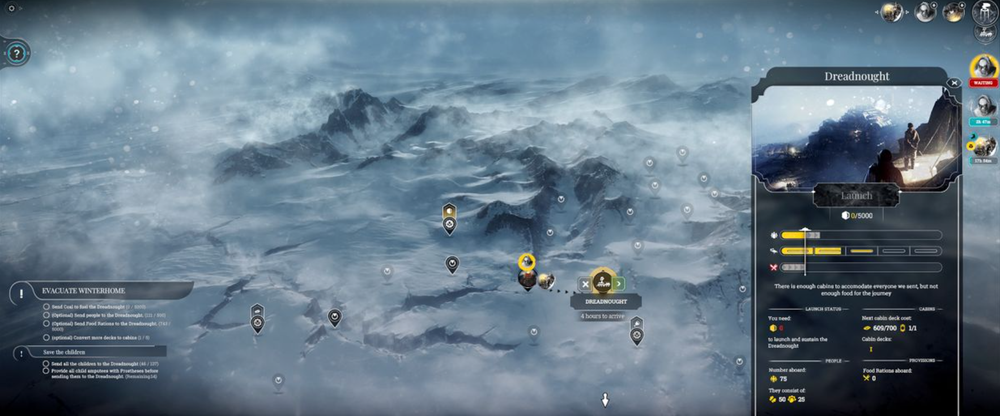
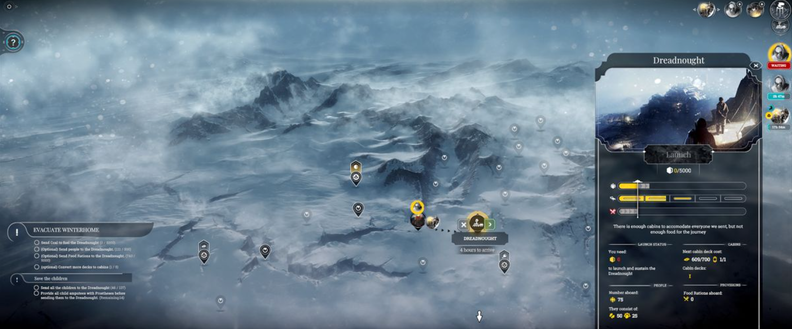

Description
Frostpunk is a brand-new title from the creators of This War of Mine. It’s a society survival game that asks what people are capable of when pushed to the brink of extinction. In an entirely frozen world, people develop steam-powered technology to oppose the overwhelming cold. The city’s ruler has to manage both the citizens and the infrastructure they live in.
The leader’s tactical skills face challenges that will frequently question morality and the basic foundations of what we consider organized society.
Optimization and resource management often clash with empathy and thoughtful decision-making. While city and society management will consume most of the ruler’s time, at some point exploration of the outside world is necessary to understand its history and present state. What decisions will you make to ensure the survival of your society? What will you do when pushed to the limit? And...
...who will you become in the process?
Game Categories
- Genre: Strategy / tactics
- Perspective: Diagonal-down
- Visual: Free camera
- Gameplay: City building / construction simulation
Quote
Frostpunk is special, it's one of a kind in that the game is used as a vehicle to convey a message in a way that most games can't even aspire to achieve. You'll switch of your PC after a session and walk off filled with 'what if's' and that is an amazing experience. -- https://www.mobygames.com/game/107578/frostpunk/reviews/#
 
